Famous Landmarks of Brussels
Skip to Question
The Brussels–Scheldt Maritime Canal
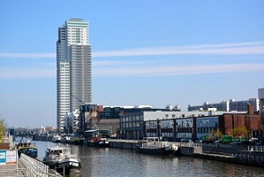
The Brussels–Scheldt Maritime Canal, is a canal in Belgium linking Brussels with the Scheldt river and ultimately the sea.
Built in 1561, the canal is one of the oldest navigable canals in Belgium and indeed in Europe.
Parc du Cinquantenaire
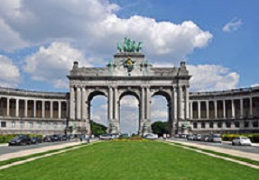
Parc du Cinquantenaire ("Park of the Fiftieth Anniversary") is a large public, urban park (30 hectares) in the easternmost part of the European Quarter in Brussels, Belgium.
It's known for the triumphal arch that was planned for the National Exhibition of 1880 to commemorate the 50th anniversary of the independent state of Belgium.
Manneken Pis
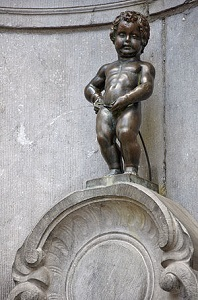
Manneken Pis (Dutch for "Little Pissing Man") is a landmark in the centre of Brussels, depicting a naked little boy urinating into a fountain's basin
It was designed by Jérôme Duquesnoy the Elder and put in place in 1618 or 1619 and is the most famous fountain of Brussels.
Palace of Justice of Brussels
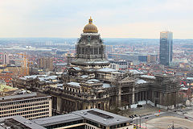
The Palace of Justice of Brussels or Law Courts of Brussels is the most important court building in Belgium. It is located on Place Poelaert in the Marolles district.
Built between 1866 and 1883 by the celebrated architect Joseph Poelaert in the eclectic style, the building is reputed to be the largest constructed in the 19th century and is a notable landmark of Brussels.
De Brouckère Square
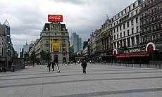
De Brouckère Square is a major square located in the city centre. It is named in honour of Charles de Brouckère, a former mayor of Brussels and professor at the Free University of Brussels, who played a great political role during the Belgian Revolution of 1830.
The area around the square is characterised by the presence of theatres, a large cinema, hotels and restaurants, as well as some of the most important entertainment venues and shopping streets in the city.
St Catherine's Square
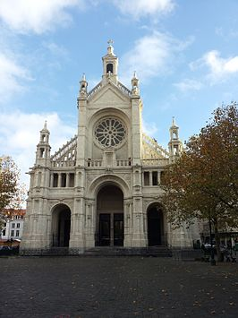
The central square was once the city’s main fish market, and this is still the best place to indulge in a dish or two of Brussels’ famous seafood.
It's surrounded by several historic building, including the Sainte Catherine's Church and parts of the first wall of the city.
Marolles
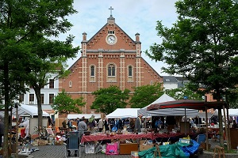
The Marolles is a popular historic neighbourhood of Brussels, situated between the Palace of Justice and Brussels-South railway station
The Atomium
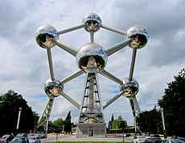
The Atomium is a landmark building in Brussels, originally constructed for the 1958 Brussels World Expo (Expo 58)
It represents a single unit of iron crystal magnified 165 billion times. There are 9 spheres representing atoms which are connected by tubes with escalators and lifts. Each sphere is about the size of a large apartment (18m diameter).
Botanical Garden of Brussels
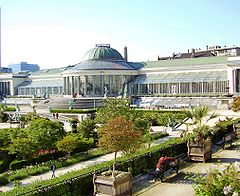
The Botanical Garden is an urban park sandwiched by the roads of Brussels’ northern quarter. Thanks to its previous life as a working botanical garden it has kept a mixture of styles (French, Italian and English) and a large variety of trees and plants.
The main building is now a cultural complex and music venue known as "Le Botanique".
Grand Place
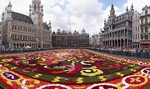
The Grand Place ("Grand Square") is the central square of Brussels. It is surrounded by opulent guildhalls and two larger edifices, the city's Town Hall, and the King's House or Breadhouse building containing the Brussels City Museum.
The Grand Place is the most important tourist destination and most memorable landmark in Brussels. It is also considered as one of the most beautiful squares in Europe, and has been a UNESCO World Heritage Site since 1998.
The Question
Can you put these landmarks in the right order ?
All of these landmarks are represented in this apartment, can You found them ?
This list is in the wrong order, can you sort it so it matches the pattern below ?
(Drag and drop by pushing the boxes with your finger)
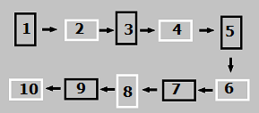
- Manneken Pis
- Grand Place
- De Brouckère Square
- Parc du Cinquantenaire
- Marolles
- The Atomium
- The Brussels Canal
- St Catherine's Square
- Palace of Justice of Brussels
- Botanical Garden of Brussels